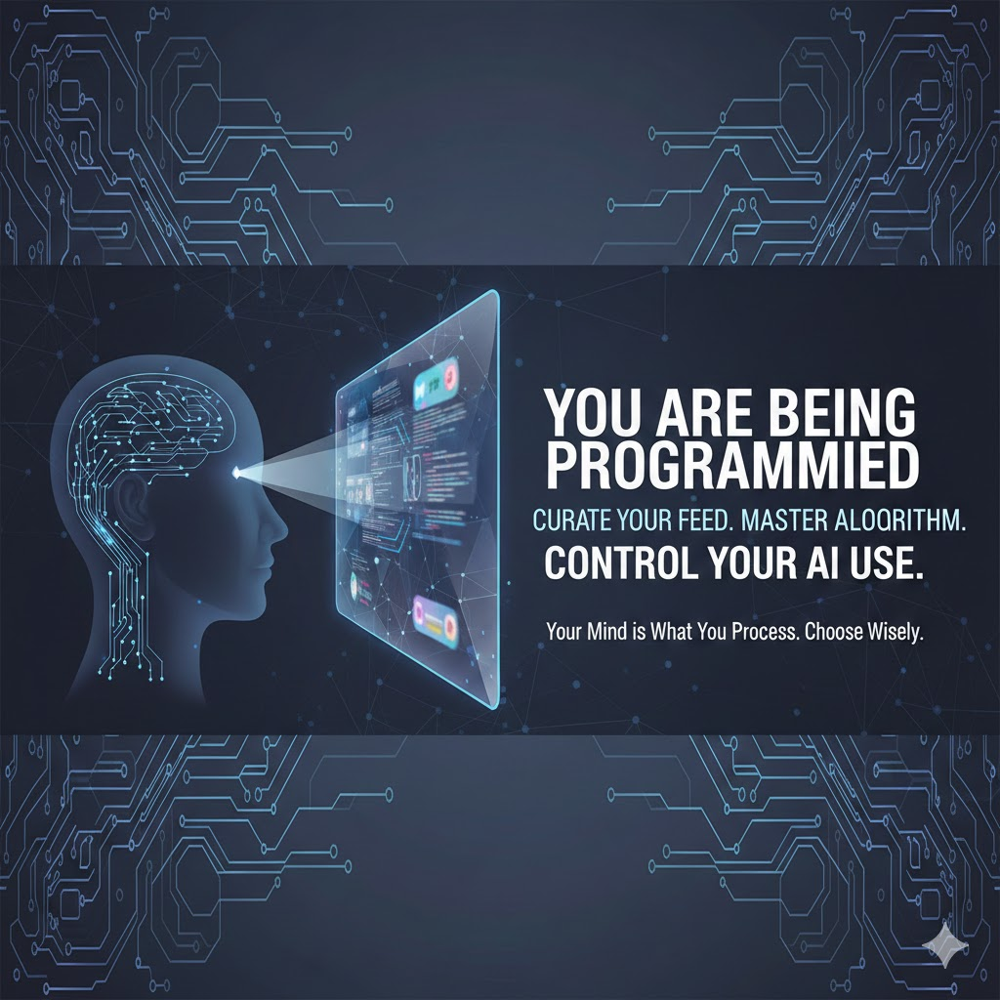

You Are Being Programmed - Curate Your Feed and Control Your AI Use
Just as Large Language Models (LLMs such as ChatGPT) are trained on input data, your mind is trained on the content that you process. There is an old idiom in computer programming: garbage in, garbage out. What this means is that if you feed bad data into a system, you can only get bad data out of that system, where bad in both cases can mean invalid. Arguably, much of the data on the Internet is "bad" in some way or another.
Originally published to
You have some advantages over the LLMs. For one thing, you can process and evaluate information, reshaping it before storing it. For another, you can choose what data to process. One way to choose is to curate your feed. This can mean controlling the sources you access, the channels to which you subscribe, the individuals that you follow and the people with whom you connect, and the content from feeds that you consume by choice. You can use such techniques to manipulate "the algorithm" to surface content more appropriate for you, but you should always beware of potential vendor motivations behind the algorithm.
Master the Algorithm
I recently commented on a conversation with Mahmoud Owies:
He had written:
"btw, i mastered the algorithm."
As a content contributor, mastering the algorithm can refer to using techniques to produce content that is likely to be surfaced by the algorithm most frequently.
My response was:
"When you think you've mastered the algorithm, the algorithm has mastered you."
What I meant is that if you are producing content optimized for the algorithm, then rather than controlling the algorithm, the algorithm is actually controlling you, in a sense preventing you from being your true self.
Mahmoud responded:
"That makes sense! 😯👏👏👏"
I think that most people who think about these issues would understand them, but I fear that most people do not think about them or do not care, possibly because they don't see the potential impacts.
To truly master the algorithm, you need to prevent it from mastering you. In other words, you need to control yourself, not let the algorithm control you.
Social Media and AI Impact on Brain Chemicals
I am not a neuroscientist, but here are some quick notes on how technology impacts chemicals in the brain:
-
Dopamine: There is growing awareness of what is sometimes called the dopamine cycle. Dopamine is a critical element of the brain's reward system that drives human behavior with motivation and desire, often associated with social validation and novel experiences. It's important to consider how gamification and other aspects of computer systems affect your dopamine level. Dopamine is released before you get a reward, which encourages you to seek that occurrence. Its intention is to reinforce beneficial behaviors, but it can be used to increase negative behaviors as well. Dopamine is essential to attention, focus, learning, memory, mood, and sleep regulation. Easy access to dopamine can reduce a person's patience for delayed rewards, which are often more valuable and require more effort than instant gratification.
-
Oxytocin: Interaction with LLMs (Large Language Model, such as ChatGPT) is known to increase oxytocin in the brain. Oxytocin is crucial to all forms of human bonding as well as social and reproductive behaviors. It may also modulate stress responses and anxiety, and influences behavior. This raises obvious concerns such as the potential to increase social withdrawal as well as technology addiction, the potential for withdrawl symptoms, and possible resulting actions.
-
Serotonin: Social media can influence serotonin levels, which are associated with mood stability as well as our sensations of social status. For example, seeing the wealth and enjoyment on others on narcigram could reduce an individual's serotonin, resulting in negative feelings such as unhappiness, anxiety, and depression, as well as impacting memory, learning, attention, sleep, eating habits, bowel functions, and even blood clotting and vasoconstriction. This is especially concerning considering the prevalence of Selective Serotonin Reuptake Inhibitors (SSRIs), which are antidepressant medications such as Prozac and Zoloft.
Relevant Strategies and Tactics
- Spend more time with people and away from screens.
- Research these topics and keep them in mind.
- Reduce your use of social media and artificial intelligence.
- Set specific periodic (hourly, daily, weekly, monthly, yearly, etc.) intervals and cutoff points for using technology. Use device capabilities to enforce these limits.
- Leave your phone at home sometimes.
- Carry a pad of paper and a pen to take notes on things to do and topics to research later.
- Don't let tools change your spellning, grammar, and writing automatically; read their suggestons, make the changes manually, and apply them to your subsequent writing. Most people learn best by doing, not by watching.
- Implement policies, such as whoever touches their phone first at a restaurant must pay for dinner.
- Take periodic technology detox periods and evaluate their impact on your mental health.
- Try to focus on consuming and producing valuable content rather than things like maximizing follower counts and interactions such as comments and likes.
- Disable and ignore notifications. Don't check for notifications frequently.
- Avoid cognitive offload to AI including LLMs. Do not accept answers from LLMs passively. Use logic, critical thinking, and multiple sources to verify facts.
- Periodically unfollow and mute content sources that do not benefit you, including any that trigger feelings of inadequacy, frustration, stress, excessive consumption, or negative comparison.
- Gravitate towards sources of positive inspiration.
- Seek and interact with educational, positive, skill-based, and interest-driven content.
- Comment constructively.
- Use your browser's private mode to access content that you do not want to influence the algorithm.
- Use technology actively rather than passively. Note that learning generally requires acting, not just gazing.
- Mute specific keywords related to negativity or outrage culture.
- Set your phone to grayscale mode rather than constantly consuming vibrant colors.
- Employ AI tools to offload emotional or complex decision-making tasks that might cause anxiety, such as drafting a difficult email or summarizing dense, overwhelming information, thereby regulating your emotional state and reducing stress hormones.
- Without specific intentions and thorough understanding of the potential effects, avoid using LLMs as chatbots entirely. Instead, use them as tools for specific purposes such as self-education.
- Avoid anthropomorphizing or deifying AI, and beware of the impacts of its sycophantic nature on you.
- Read longform content including printed magazines and books. Do whatever you can to increase your attention span.
Conclusion
Social media and LLMs have their valuable uses including education, community, and humor. It is important to understand how they affect the human mind and to beware of certain risks. Don't take any of it too seriously. Marketing, social media, and AI technologies are all designed to apply gamification and other psychological manipulation techniques to maximize engagement, which means addiction. The risks and potential drawbacks of social media and AI are a huge topic about which I hope to write more in the future.
Comments
You can comment here: